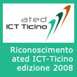

Welcome to CodeCity!
CodeCity is an integrated environment for software analysis, in which software systems are visualized as interactive, navigable 3D cities. The classes are represented as buildings in the city, while the packages are depicted as the districts in which the buildings reside. The visible properties of the city artifacts depict a set of chosen software metrics, as in the polymetric views of CodeCrawler.
You can read more about my approach in the ICPC 2007, VISSOFT 2007, Softvis 2008, WASDett 2008, WCRE 2008, FAMOOSr 2008 papers and the ICSE 2008 tool demo on my Publications page. If you would rather prefer a hands-on learning process, download CodeCity, run it, and tell me what you think. I appreciate every piece of feedback I get. CodeCity is programmed in VisualWorks Smalltalk on top of the Moose platform, uses OpenGL for rendering, and runs on every major platform. To see CodeCity in action visit the Wall of Fame. Here is a sneak preview with a CodeCity visualization of JDK (Java Development Kit) v1.5:

|  | I was awarded the 1st prize in the "Riconoscimento ated-ICT Ticino" 2008 competition, for the project: "CodeCity: Immersive Software Visualization". The 2008 competition was disputed among 18 projects, including 5 from the IT industry and 11 from the Academia. The ATED-ICT association promotes competencies in the field of IT in the Ticino canton in Switzerland. |
CodeCity appeared in a guest column of IEEE Software Journal (Volume 26, Issue 1, Jan.-Feb. 2009, pp 22-23), called Tool Building on the Shoulders of Others.